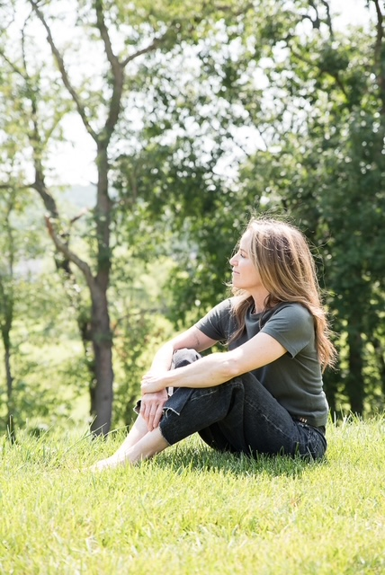

Marjy Berkman
Organization Inside and Out
Helping people reconnect with themselves.
Professional Organizing Craniosacral & Polarity Therapy Holistic Guidance

I believe we’re all longing for connection — to ourselves, to our bodies, to our homes, to the people we love, and to a life that feels meaningful.
My work is devoted to helping people find their way back.
The work
I’ve come to see how closely our inner lives are connected to the environments we create around us. Some of my work is practical — helping you create a home or wardrobe that functions well and feels like you. Other work is more embodied, inviting you to slow down and listen to what your body is telling you.
A word from a client
I’ve had the privilege of knowing Marjy for five years, and she has been a wonderful support on my journey toward clearer, healthier skin. Her knowledge of herbalism, nutrition, energy, and holistic wellness is incredible — and she truly understands because she has experienced her own journey. Marjy is caring, resourceful, positive, and intentional, and she genuinely listens and supports you as a whole person. I’m so grateful for her guidance and support. What started as a coaching relationship has grown into a friendship that I truly value.